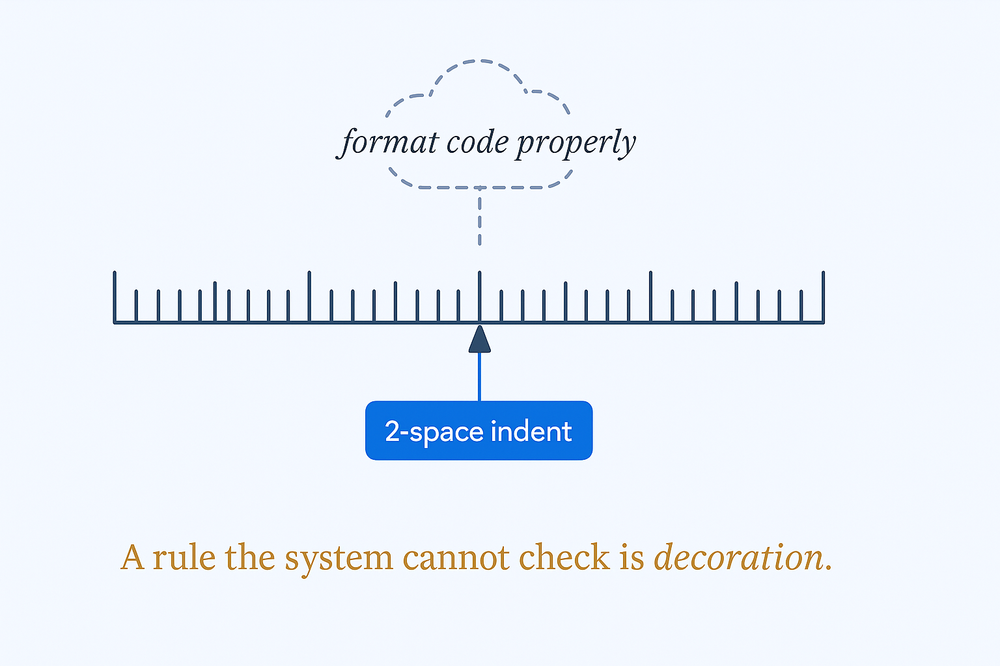

'2-space indent' is a rule; 'format code properly' is a wish. A rule the system can't check is decoration.

Most people's AI rules fail before the model ever disobeys them — they fail at the writing desk, because "be professional" and "format properly" cannot be complied with or violated. There is no output that unambiguously breaks them, so there is no output they prevent. The test for every rule is one question: could a checker — human or automated — decide pass or fail? "2-space indent" passes the test. "Write cleanly" is a wish wearing a rule's clothes.
This is why persona instructions measurably change nothing while concrete constraints change everything. "Act as a senior engineer" gives the model no target to hit and gives you no target to inspect; "every function under 40 lines, every public function documented" gives both. The model needs a condition it can satisfy; you need a condition you can audit. A rule that satisfies neither is decoration — it makes the file feel governed while governing nothing.
Verifiability is also the precondition for everything downstream. A validation loop can only check output against rules that have a pass/fail answer — you cannot check against a vibe. An independent judge can only score against a rubric of decidable criteria. The whole machinery of making AI deterministic rests on this floor: unverifiable rules aren't weak links in the chain, they're links that were never there.
The discipline transfers straight from data-quality work, where it's decades old: a quality rule without a measurable condition is a slogan. "Customer records must be accurate" audits nothing; "customer email must match RFC format and be non-null" audits itself. Same move, new reader — whether the rule is read by a data steward or a language model, it only exists if it can be broken.